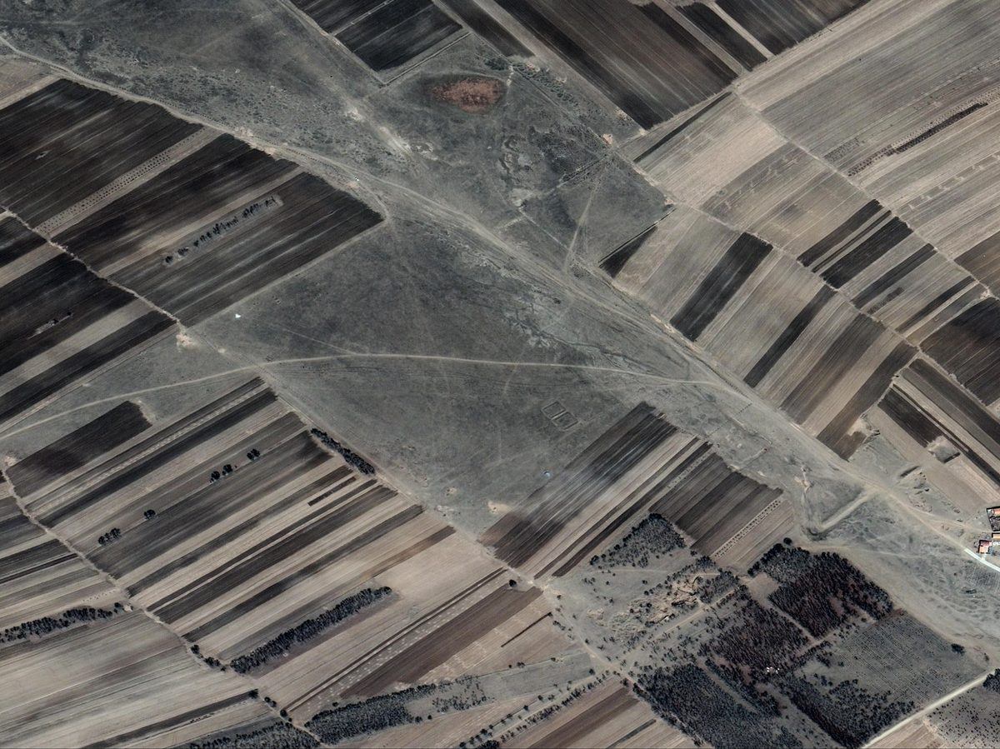
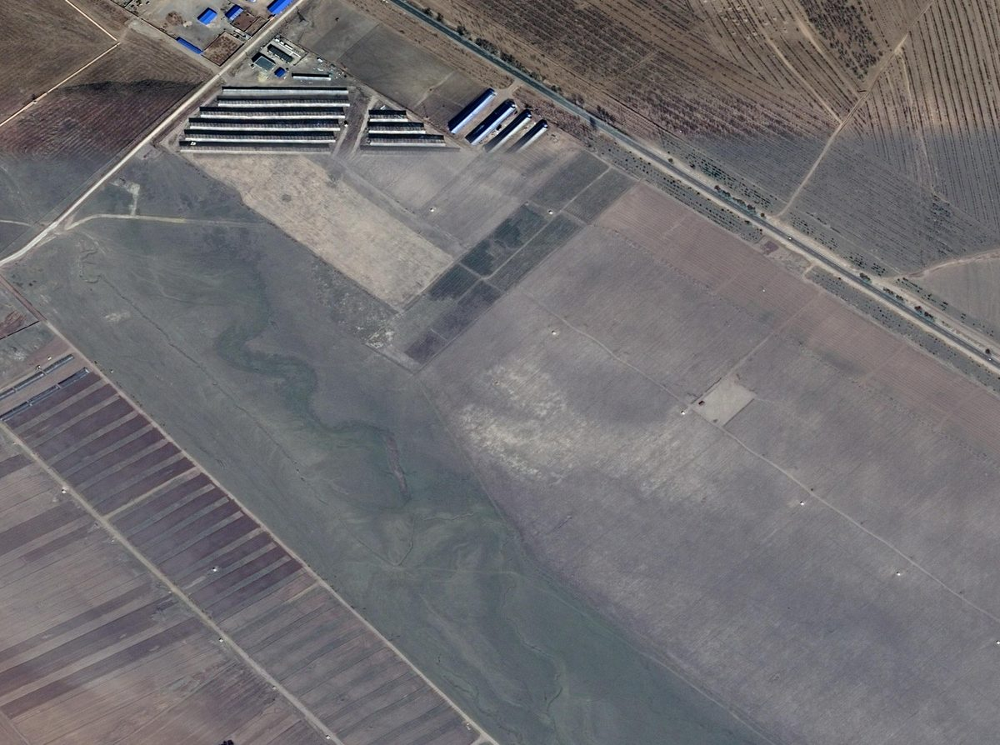
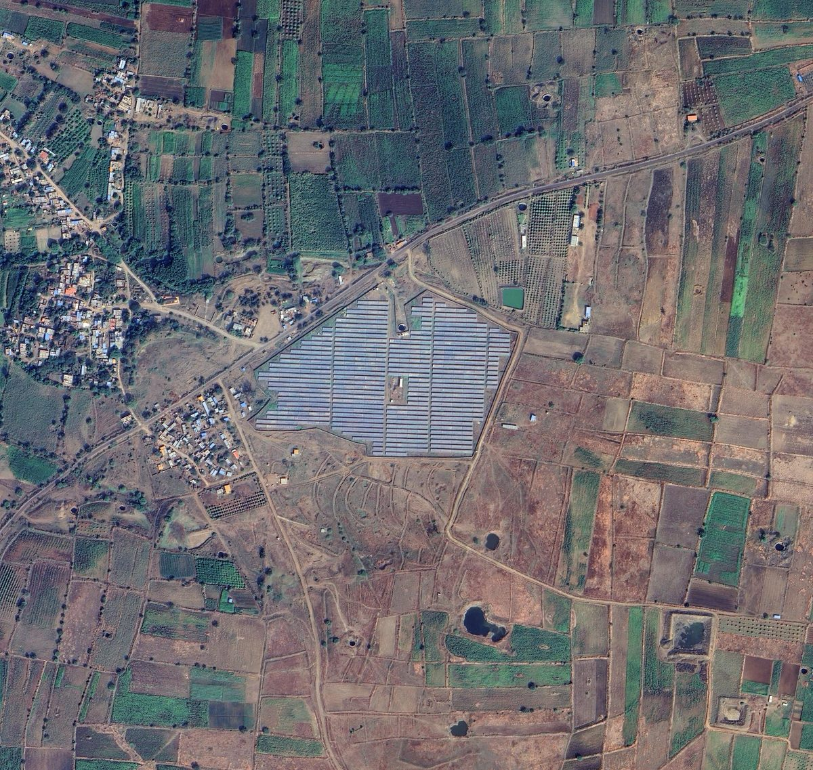

Access the full library
http://120.77.78.161:8443 — the complete figure archive (67,821+ images, ~105 GB), browsable and downloadable by category. Self-hosted on our station server; available 24×7.
A citable archive with DOI will be deposited on Zenodo upon publication of the
accompanying paper. This GitHub repository holds documentation and example figures only —
no CSV files with coordinates or training metadata are released before publication.
Questions or collaboration: open an
Issue or email
jinyb_gzmss@yeah.net.
What this library is
Every sample was reviewed by a human analyst against multi-source evidence (VIIRS I04/M13 brightness-temperature patches, Sentinel-2 time series, Landsat, NDVI, geostationary AHI detections, and sub-metre Google Earth historical scenes). The library pairs confirmed real fires with hard-negative categories that operational VIIRS fire products commonly confuse with fires — industrial heat sources, photovoltaic plants, hot roofs, heated water, volcanic activity, and clean background. Figure production is documented in METHODOLOGY.md; category definitions in the README.
Fire samples
Confirmed fire (daytime) 38,756 review figures
Human-confirmed real fires observed in daytime VIIRS overpasses.
Confirmed fire (nighttime) 963 review figures
Human-confirmed real fires observed in nighttime overpasses.
Large fire events 145 review figures
Large fire events (bigfire2000 collection).
Large fire events (v5 full set) 1,999 review figures
v5 full re-render of the large-fire collection; 145 ids overlap with large_fire.
Non-fire hard negatives
Industrial heat source 6,692 review figures
Factories and industrial heat sources, incl. persistent sources.
Photovoltaic power plant 1,418 GE before/after cases
PV plants — shown as Google Earth before/after pairs bracketing the event date.





Open / persistent burning 1,729 review figures
Open burning and open-pit coal combustion.
High-temperature roof / hot surface 290 review figures
High-temperature roofs and hot ground surfaces.
Urban / industrial mix 277 review figures
Urban and industrial mixed areas.
Cropland (non-fire) 1,590 review figures
Cropland heat waves / residue burning appearances.
Water body 3,712 review figures
Water bodies.
Heated water / fixed offshore source 848 review figures
Fixed heat sources on water (e.g. offshore platforms).
Volcano 29 review figures
Volcanic activity.
Clean background 7,955 review figures
Clean background scenes.